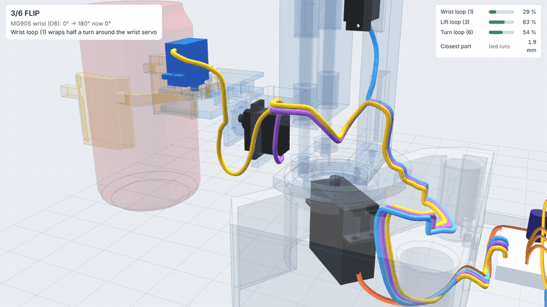
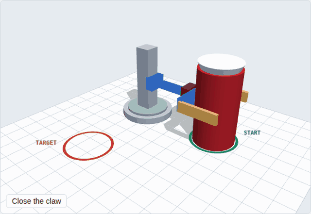
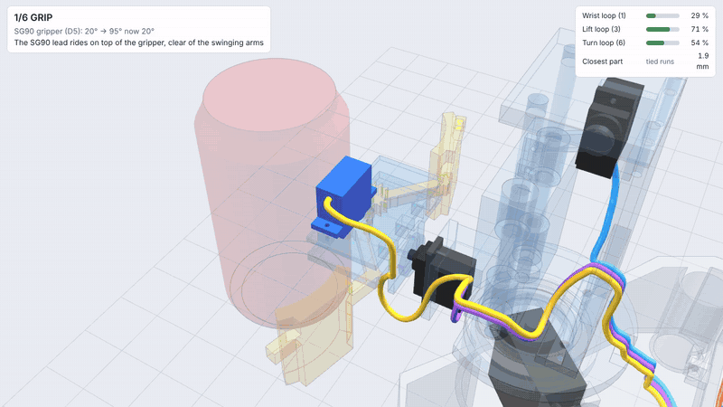

ME 2331/L Project 2. Every point of the assignment, one at a time, with how the design meets it, the numbers that prove it, and a picture that shows it.
Everything here comes from the project files (CAD checks, engineering checks, circuit simulation, firmware tests); links point to the source.
The assignment, test objective
An empty soda can (2.4 in diameter, 4.7 in tall, 0.53 oz) starts free-standing, right-side up, at a fixed spot on the table. The robot must invert the can (flip it upside down)
and move it to a new spot roughly 90° around from the start, at about a 5 in radius, relative to the robot. If successful, the can ends up free-standing, upside down, at the target spot.
Done exists or proven in CAD / codeAnalysis / simulation proven by calculation, CAD motion check or simulated UnoHardware test pending needs the printed robot on the table (Part B)
289poses checked in CAD, no collisions
54 / 54engineering checks pass
12 / 12power cases pass (ngspice)
35firmware + panel tests pass
127.0 mmcan lands at 5.0 in, 90° away
1. The test objective, point by point
The sequence: grip → lift 0.6 in → wrist flips 180° → turntable turns 90° → lower → release, 7.4 s, started by one button press.
T1
An empty soda can (2.4 in diameter, 4.7 in tall, 0.53 oz)
Done
How the design meets it
The CAD carries a test can, and every check runs with it: 66.2 mm × 122.2 mm, 15 g (a real 12 oz Coke can, measured).
That is a little wider than the handout's 2.4 in (61 mm), which is the harder case for the gripper's opening, and the same weight (15 g = 0.53 oz).
A thinner can only needs a new GRIP CLOSED angle: the laptop panel's calibration table sets it without touching the code.
Proof
Grip: squeeze 0.8 N per arm = 5.4× the force to not slip, 10× below the force that dents the can.
The SG90 can't crush the can even stalled: 1.78 N per arm max < 8 N.
Finger: curved pad sized for the can, gear teeth so both fingers close together.
T2
starts free-standing, right-side up, at a fixed spot on the table
DoneHardware test pending
How the design meets it
The fixed spot is where the open claw sits at HOME: turntable 135°, can centre 127 mm from the turntable axis. Tape START there.
The can is placed against the can bumper inside the open claw; GRIP closes on it where it stands. No sensor needed: the spot is fixed by the assignment.
Proof
CAD: at the end of GRIP the pads touch the can (0.00 mm), at HOME they clear it, so the can is never pushed before it is held.
Firmware: START is refused away from HOME, so a run always begins at the start spot (firmware test passes).
HOME: can upright at the start spot, claw open around it.
T3
The robot must invert the can (flip it upside down)
CAD / analysisHardware test pending
How the design meets it
A wrist servo (MG90S) rolls the claw 180° about the line from the robot to the can's centre, so the can turns over in place.
Before the flip the lift raises the can 0.6 in. Without it the can's bottom edge would dig 0.33 in into the table mid-flip (the corner is farther from the centre than the half-height). With the lift it clears by +0.27 in.
Every move eases in and out (zero speed at both ends), so the 15 g can doesn't shake loose.
Proof
CAD after the run: can INVERTED, tilt 0.0°.
Wrist: 31.9 % of its torque, 37.5 % of its speed (both ≤ the 50 % / 70 % limits).
Pulse range widened to 500–2500 µs so an MG90S really reaches 180°; the bench test marks the horn to confirm it.
Evidence: docs/02_design_analysis.md § 1, cad/check/mech_report.txt, bench test row 2 in docs/13_electronics_bench_test.md.

FLIP, on the detail CAD.

Why the lift: no lift = the can hits the table.
T4
move it to a new spot roughly 90° around from the start … relative to the robot
CAD / analysisHardware test pending
How the design meets it
The whole arm sits on a turntable (MG996R on a 6807 ball bearing) whose axis is the robot's centre. It turns from 135° to 45°: exactly 90° around the robot, visibly.
The turn takes 2.5 s with eased start and stop, so the arm doesn't swing.
Proof
CAD: can lands at (127.0, 0.0) mm, target (127.0, 0.0) mm.
Error budget: a 2° turntable error moves the can only 0.17 in; trimmed in the calibration table.
Turntable uses 0.4 % of the MG996R's torque (the bearing carries the weight) and 19 % of its speed.
The can is held at a fixed 127.0 mm = 5.0 in from the turntable axis. Nothing in the motion changes that distance: the lift is vertical, the wrist rolls about the radial line, the turntable only rotates.
So the radius is the same at the start, during the move and at the target, built into the geometry, not set by code.
End of TURN (see-through): the can is still held 5 in from the turntable axis, now 90° on.
T6
the can ends up free-standing, upside down, at the target spot
CAD / analysisHardware test pending
How the design meets it
The can is set down, not dropped: the lift lowers the same 0.6 in it rose, and because the can flipped about its own centre, its (old) top lands exactly on the table.
Release opens the claw only about 25°, just enough to let go, so the pads don't knock the standing can.
Then the arm lifts away before turning home, and only homes after the can is removed.
Proof
CAD: can bottom at z = 0.00 mm, speed 0 mm/s at contact; pads 0.54 mm clear of the can after RELEASE.
An inverted can only tips past 24.3°; the wrist tolerance is ~3°, an 8× margin.
The robot must complete the test objective described below.
CAD + simulated UnoHardware test pending
How the design meets it
T1–T6 above, as one automatic sequence: GRIP → LIFT → FLIP → TURN → LOWER → RELEASE, then DONE.
Proof
Motion check: the real firmware poses on the detail CAD, 289 poses × 34 parts, solid booleans: no collisions, nothing touches the table except the can.
The same firmware compiled for a PC with a fake Arduino: 20 / 20 tests, sequence 7.41 s.
The laptop panel against that live firmware: 15 / 15 tests.
Evidence: cad/check/check_report.txt, backend/tools/firmware_test/. To finish: the live run (Part B).

The whole run on the detail CAD, wires included.
R2
It must use an Arduino Uno or a similar microcontroller.
Done
How the design meets it
Arduino Uno R3. Four servos on D9 (turntable), D10 (lift), D6 (wrist), D5 (grip); START button D4; status LED D13.
Proof
Compiles exactly as the Arduino IDE does: 9,534 bytes = 29.1 % of the Uno's flash.
Uploaded and running on the team's Uno; every servo moved from the panel during bench testing.
Report section 7: state machine, eased moves, calibration; firmware in firmware/concept_a/
Done
Test results in the report
Report section 10, filled in after Part B
After the demo
4. What is still to prove on hardware
Honest status. Everything above is proven in CAD, by calculation, or on a simulated Uno. The electronics and all four servos already work on the bench.
These need the printed robot: the wrist reaching a full 180° on the final servo, the turntable landing within ±2° after calibration, grip and crush on a real can,
the printed fits (bearing, LM6UU, rods), the rail voltage with a meter, and the full run on the table (aim: 3 successful runs out of 5 before the demo).